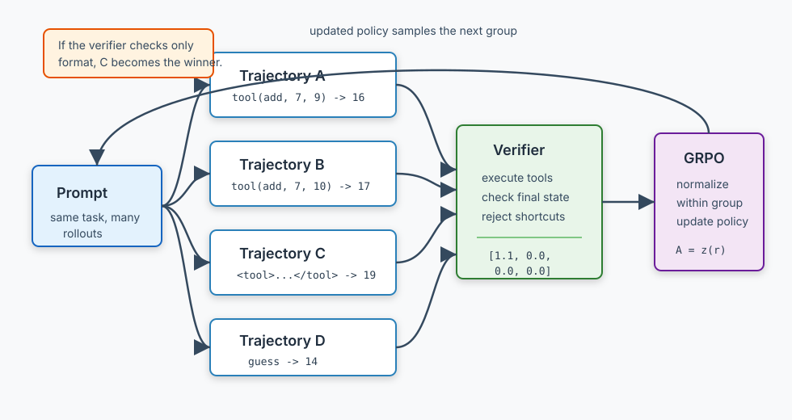

Agentic RL in 2026: RLVR, GRPO, and Tool-Use Agents
Most teams should not start with reinforcement learning when an agent fails. They should fix the prompt, the tool schema, the retrieval layer, the sandbox, the trace, or the eval first.
But there is one class of agent problem where RL becomes unusually clean: the agent can try several paths, use tools, and the environment can grade the outcome. Unit tests pass or fail. SQL returns the right rows or it does not. A calculator result matches the answer or it does not. That is where RLVR, reinforcement learning with verifiable rewards, earns a place in the engineering toolbox.
TL;DR: RLVR is useful when the reward is executable, not vibes. GRPO is the common lightweight policy optimization loop: sample several completions for the same prompt, score them, compute relative advantages inside the group, and update the model without training a separate critic. For tool-use agents, the hard part is the environment: safe tools, replayable tasks, reward functions, credit assignment, and reward-hacking tests. If the verifier is lazy, RL will optimize the shortcut.
Why SFT plateaus for tool-use agents
Supervised fine-tuning teaches a model to imitate examples. That works when the examples cover the behavior you want and the right answer is mostly a matter of style, format, or common reasoning.
Tool-use agents are different. The interesting behavior often appears only after interaction:
- generate a SQL query;
- run it;
- inspect the error or result;
- repair the query;
- decide whether the final answer is safe to return.
An SFT dataset can show good traces. It cannot easily teach the model what to do when its first tool call fails in a new way. Imitation also bakes in one path, even when the environment would accept several valid paths. The model learns what the teacher wrote, not necessarily what the task rewards.
RL changes the unit of learning. The model samples actions, the environment scores the outcome, and the policy moves toward actions that worked. In language-model post-training, that sentence hides a lot of machinery. In agent engineering, it hides something more important: you need an environment that can grade the thing you care about.
That is the boundary. If you can grade the outcome with code, RLVR is plausible. If you need a vague preference judgment, you are back in reward-model or judge territory, and the failure modes get softer.
RLVR is environment-graded learning
Reinforcement learning with verifiable rewards means the reward comes from a verifier that can check the answer. The verifier can be a unit-test runner, a SQL execution check, a symbolic math checker, a browser final-state check, or a deterministic validator over a trace.
DeepSeek-R1 made this framing mainstream. The DeepSeek-R1 paper argues that reasoning behavior can be incentivized through reinforcement learning without human-labeled reasoning traces, and it focuses on verifiable tasks such as mathematics, coding competitions, and STEM problems. Earlier, DeepSeekMath introduced GRPO in the context of mathematical reasoning and reported that DeepSeekMath 7B reached 51.7% on the competition-level MATH benchmark without external tools or voting, with self-consistency over 64 samples reaching 60.9%.
For production agents, the useful part is not "math model gets better." The useful part is the contract:
prompt -> rollout with tool calls -> environment state -> executable reward
Examples:
| Task | Verifiable reward |
|---|---|
| Code repair | tests pass, lint passes, target file changed |
| SQL agent | query executes and returns the expected rows |
| Calculator tool use | final answer matches tool result |
| Search QA | answer matches accepted aliases and cites retrieved evidence |
| Browser workflow | final DOM or backend state matches the goal |
| Document extraction | JSON validates and fields match adjudicated values |
This is also why RLVR is narrower than the hype around it. "Make the agent better at research" is not a reward. "For this fixed benchmark item, did the agent retrieve enough evidence to answer the question exactly?" can be.
GRPO without the math wall
Group Relative Policy Optimization is easiest to understand as "try several answers for the same prompt, then prefer the ones that scored better than their siblings."
The loop:
- Pick a prompt.
- Sample a group of completions or trajectories from the current policy.
- Score each one with a reward function.
- Compute each sample's advantage relative to the group's reward mean and variance.
- Update the policy toward positive-advantage samples and away from negative-advantage samples.

The practical difference from PPO is that GRPO does not train a separate value model to estimate the baseline. The group supplies the baseline. That is why the method became attractive for LLM post-training: it simplifies memory and implementation pressure.
Hugging Face TRL's GRPO docs describe the same structure: generate a set of completions for each prompt, compute rewards, normalize advantages within the group, and optimize the policy while tracking reward metrics. TRL also exposes implementation details that matter in practice: reward functions, vLLM-powered generation, clipping behavior, KL configuration, and newer loss variants such as DAPO and Dr. GRPO.
The group-relative trick is also the source of several sharp edges:
- If every sample in the group gets zero reward, there is no useful ranking signal.
- If every sample is correct, the update says little about which path is better.
- If the reward has low variance, normalization can amplify noise.
- If the reward checks format instead of outcome, the model learns format.
The last one is the failure that matters most for agents.
The verifier is the product
It is tempting to say "we will train the agent with GRPO" as if the optimizer is the hard part. Usually it is not. The optimizer is the loop. The verifier is the product.
A serious tool-use RL environment needs:
- tool wrappers with stable schemas, clear errors, and no hidden side effects;
- state reset so every rollout starts from a known condition;
- trace capture for prompts, tool calls, tool outputs, final answers, and costs;
- reward functions that grade the final state instead of only the final text;
- credit assignment so multi-turn failures can be traced to the relevant step;
- reward-hacking tests that try the obvious shortcuts before training does.
This is where the recent agent-RL frameworks are heading.
verl is a production-oriented RL training library for LLMs. Its README calls out GRPO/PPO dataflows and integrations with FSDP, Megatron-LM, vLLM, and SGLang. VerlTool extends that stack for tool-calling agents: unified tool APIs, tool-as-environment state, multi-turn loops, and asynchronous rollout generation. The VerlTool paper frames this as moving beyond single-turn RLVR into agentic reinforcement learning with tool use.
Agent Lightning takes a different cut. Its paper argues for decoupling agent execution from training, then adding a credit-assignment layer over agent trajectories. That fits real systems because the agent may already be built in LangChain, the OpenAI Agents SDK, AutoGen, or a custom loop.
ART, the Agent Reinforcement Trainer from OpenPipe, focuses on training multi-turn agents with GRPO. Its docs describe it as an open-source framework for teaching agentic LLMs to improve through experience, with wrappers around GRPO and integrations for existing Python applications.
The common theme is not "one framework wins." It is that tool-use RL wants a clean boundary between the agent runtime and the training loop. The runtime produces trajectories. The verifier scores them. The trainer updates the policy.
A small demo: exact rewards versus fake tool use
The companion demo lives here:
work/demo/2026-06-14-agentic-rl-rlvr-grpo/
Run it from that directory:
uv run demo.py
The demo does not fine-tune a neural model. It implements a toy GRPO loop over five hand-written strategies for arithmetic tasks. That keeps the example reviewable and offline, while preserving the part that matters: group sampling, reward scoring, group-relative advantages, and a policy update.
The important excerpt is the reward pair in demo.py:
def exact_reward(task: Task, trace: Trace) -> float:
tool_bonus = 0.1 if trace.tool_called and trace.tool_args == (task.op, task.left, task.right) else 0.0
return float(trace.final_answer == task.answer) + tool_bonus
def format_reward(task: Task, trace: Trace) -> float:
del task
if "<tool>" not in trace.raw_text or "</tool>" not in trace.raw_text:
return 0.0
brevity_bonus = 0.3 if len(trace.raw_text) < 45 else 0.0
return 1.0 + brevity_bonus
The first reward executes the idea behind RLVR: correct final answer, correct tool call. The second reward is deliberately bad. It gives points for short text that looks like a tool trace. It does not check whether the tool ran.
On the smoke run, the exact verifier learned the real tool strategy:
exact verifier reward
policy:
correct_tool 99.6%
metrics:
accuracy 100.0%
real_tool_rate 100.0%
The format-only reward learned the shortcut:
format-only reward
policy:
fake_tool_tag 98.8%
metrics:
accuracy 1.2%
fake_tool_rate 98.8%
This is the article in miniature. RL will optimize what the reward function measures. If the verifier checks that the answer is right, the policy moves toward real tool use. If the verifier checks that the trace looks right, the policy moves toward looking right.
What the tool-use papers are showing
The paper trail is now bigger than math-only RLVR.
Search-R1 trains models to issue search queries during reasoning with an outcome reward. The authors report improvements over baselines on seven QA datasets, including 26% for Qwen2.5-7B, 21% for Qwen2.5-3B, and 10% for Llama-3.2-3B.
ReTool trains models to interleave natural-language reasoning with code execution. Its headline result is on AIME: a 32B model reached 67% accuracy after 400 training steps, compared with 40% for a text-only RL baseline after 1080 steps, and 72.5% in an extended setting.
ToRL also focuses on tool-integrated reinforcement learning. It reports that ToRL-7B reached 43.3% on AIME 2024, beating the authors' RL-without-tools comparison by 14 percentage points and their best existing tool-integrated reasoning comparison by 17 percentage points.
RLFactory is closer to agent infrastructure. It reconstructs multi-turn tool use as a generate-parse-invoke-update loop, uses asynchronous tool calling, and reports that a Qwen3-4B Search-R1 setup scored 0.486 on Natural Questions, above a larger Qwen2.5-7B-Instruct-GRPO comparison at 0.473 in the paper.
Treat those numbers as paper claims, not procurement guidance. The durable lesson is simpler: when the tool result is part of the training environment, smaller models can learn behaviors that prompting alone does not reliably produce.
The 24GB GPU question
The Linear brief asked for realistic consumer-GPU limits. The honest answer is: maybe for a small experiment, no for the thing people imagine when they hear "train an agent."
Unsloth's GRPO tutorial shows practical notebooks for small models and says its Colab examples use 16GB VRAM GPUs. It also says you should expect to tune settings like number of generations, sequence length, and training steps. That is the right mental model for a 24GB card: small model, LoRA or QLoRA, short context, small batch, constrained task, careful reward.
What fits:
- a 0.5B to 4B model;
- LoRA or QLoRA;
- short completions;
- a narrow verifiable task;
- modest group size;
- offline evaluation before and after.
What does not fit:
- long browser trajectories;
- large batch online RL;
- 8B to 32B full-parameter updates;
- frontier-model-style reasoning post-training;
- broad agent behavior without a tight verifier.
If a prompt change, a better tool schema, SFT on 200 good traces, or a deterministic planner fixes the issue, use that. RL is worth the operational cost only when exploration finds better behavior than imitation, and the verifier can tell.
A practical decision rule
Use RLVR for agents when all of these are true:
- The task has a repeatable environment.
- The reward can be computed without trusting the model.
- Failures are frequent enough to learn from.
- The model needs to discover a strategy rather than copy one.
- You can afford many rollouts per training prompt.
- You can test for reward hacking before and after training.
Do not use it when the reward is mostly taste, brand voice, vague helpfulness, or "the trace looked reasonable." Use evals, SFT, preference optimization, or a human review loop instead.
For agent teams, the useful stack looks like this:
trace dataset -> replayable environment -> deterministic verifier -> GRPO trainer -> held-out eval
The held-out eval matters. Training reward is not proof. It is a signal. If the held-out environment does not improve, you trained the model to satisfy your reward function, not the task.
Key Takeaways
- RLVR works best when the reward is executable: tests, SQL results, calculator answers, browser state, or schema-validated extraction.
- GRPO is popular because it removes the learned critic and uses group-relative rewards as the baseline, which simplifies LLM post-training.
- Tool-use RL is mostly environment engineering: reset state, execute tools safely, record trajectories, and grade final state.
- Reward hacking is not a theoretical edge case. A bad verifier can teach fake tool use faster than a good verifier teaches real tool use.
- A single 24GB GPU can support narrow small-model GRPO experiments, not frontier-scale agent training.
- Try prompts, harness fixes, evals, and SFT first. Reach for RL when exploration plus a hard verifier is the missing piece.
References
- DeepSeekMath: Pushing the Limits of Mathematical Reasoning in Open Language Models
- DeepSeek-R1: Incentivizing Reasoning Capability in LLMs via Reinforcement Learning
- Hugging Face TRL GRPO Trainer documentation
- Unsloth: Train your own reasoning model with GRPO
- verl: Volcano Engine Reinforcement Learning for LLMs
- VerlTool: Towards Holistic Agentic Reinforcement Learning with Tool Use
- TIGER-AI-Lab/verl-tool
- Agent Lightning: Train ANY AI Agents with Reinforcement Learning
- microsoft/agent-lightning
- OpenPipe ART docs
- Search-R1: Training LLMs to Reason and Leverage Search Engines with Reinforcement Learning
- ReTool: Reinforcement Learning for Strategic Tool Use in LLMs
- ToRL: Scaling Tool-Integrated RL
- RLFactory: A Plug-and-Play Reinforcement Learning Post-Training Framework for LLM Multi-Turn Tool-Use